My Face in the Middle Geometry

Jackie's Face in the Middle Geometry
In this project, we explore face moprhing. This is done by warping the image shape and then cross-dissolving the image colors. As you'll see below, we'll be making some pretty smooth facial morphs!
The first step to a successful morph is a successful warp. To do this, we must define key corresponding points between each face. This is to mark where in each image the eyes are for each person, the ears, the lips, the eyebrows, etc.
The correspondences shown below are the average positions between my "key points" and Jackie Chan's "key points". This is so that both images morph towards a "middle" image. With these correspondences now defined, we perform Delaunay Triangulation (beneficial as it generally helps prevent too-skinny triangles), which now gives us discrete triangles to locally warp.
|
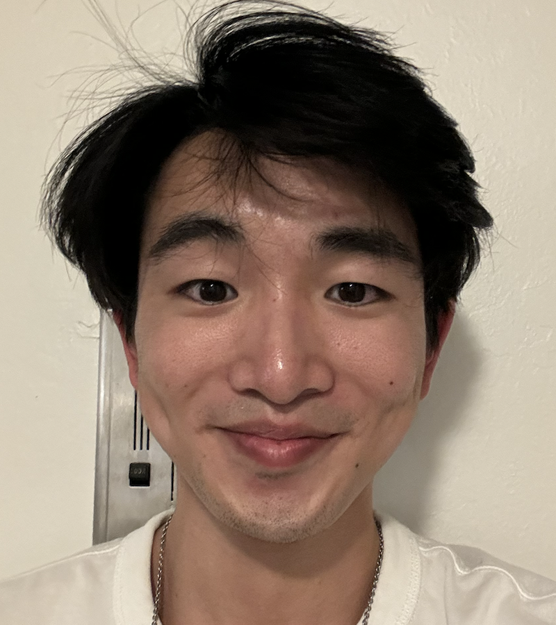 My Face with Keypoints |
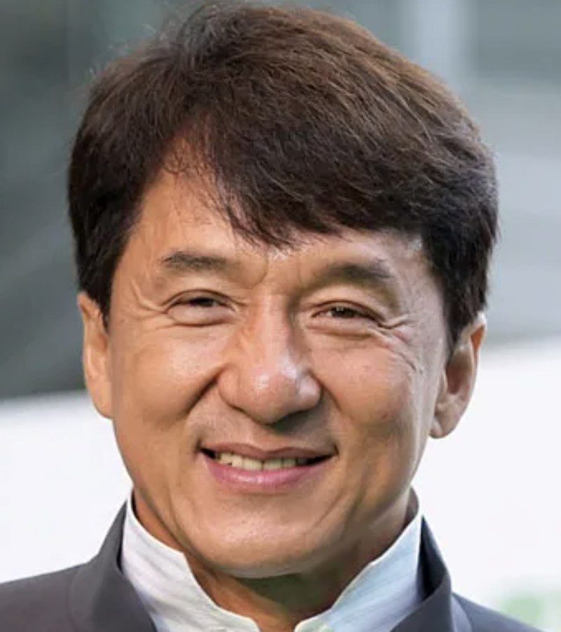 Jackie's Face with Keypoints |
|
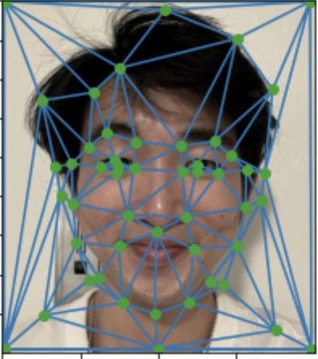 My Face with Triangulation |
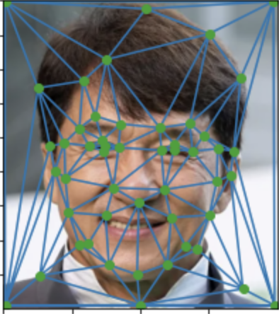 Jackie's Face with Triangulation |
Note that both images use the same triangulation indices! In other words, if in my image, there's a triangle with vertices made with the inner portion of my eyebrows, in Jackie Chan's image, there will also be a triangle made from the inner portion of his eyebrows (i.e. his corresponding key points).
We will warp my face to the "middle-ground" triangulation defined (i.e. using the averaged corresponding positions between the two images), and we will also warp Jackie Chan's face to the "middle-ground" triangulation. Note that the middle-ground triangles have different shaped triangles than both mine and Jackie Chan's faces.
To get the warp, we iterate through the corresponding triangles between the image and the middle-ground triangulation, performing an affine transform from the image's triangle -> the corresponding middle-ground triangle. To get the colors to match we just take a weighted sum (linear interpolation) between the middle-ground images.
|
My Original Face |
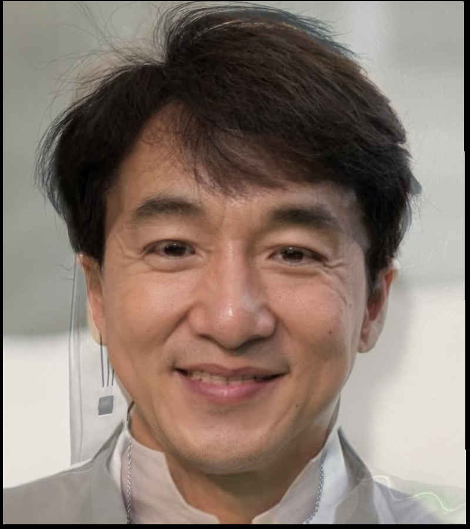 Mid-way Face |
Jackie's Original Face |
|
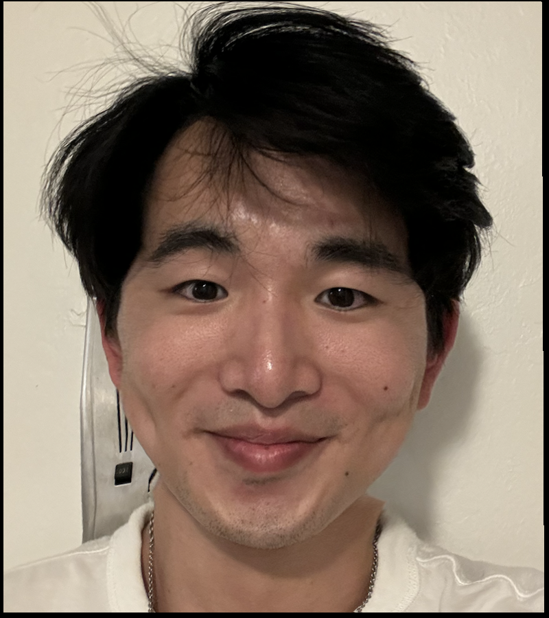 My Face in the Middle Geometry |
Jackie's Face in the Middle Geometry |
Here's the morphing process as a gif! All that's going on is we're creating hybrid-images in each frame, where we approach and reach Jackie Chan's geometry and pixel colors, then go back to my geometry and pixel colors.

Morph Sequence between My Face and Jackie's Face
Next, we use the Danes dataset of annotated faces. The alignment points have already beeen defined, and so we obtain the average face of the population by:
- Obtaining the "middle-ground" of key correspondence point positions (just average the positions)
- For each face in the dataset, warp them towards this average face shape, as described in the previous part.
- With these warped face shapes, take the average across all of them (i.e. cross-dissolve)
For this upcoming part, here's also my face in gray-scale for reference.
|
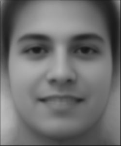 Average Face of the Population |
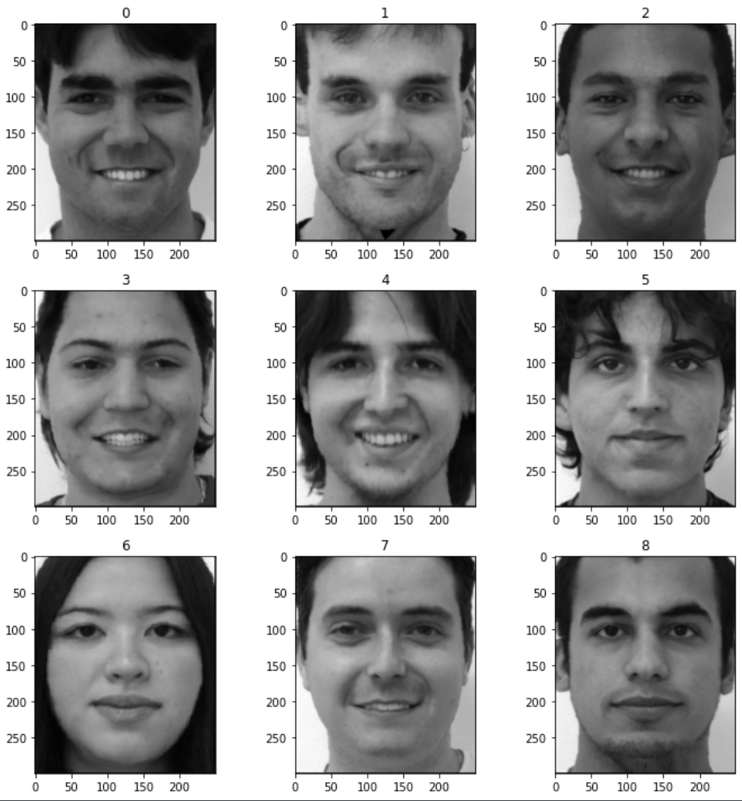 Faces Warped to Average Shape |
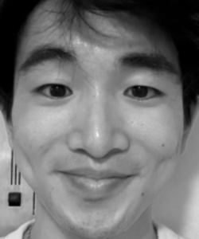 My Face in Grayscale |
We now warp the average face to my geometry, then show how it looks when cross-dissolved with my original face.
Similarly, we can also observe my face warped to the average geometry and show how it looks when cross-dissolved with the original average face.
|
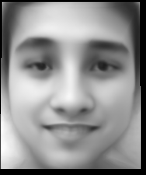 Average Face Warped to My Geometry |
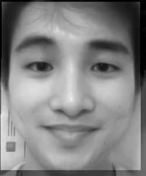 Average Face with My Geometry Cross-dissolved with My Face |
|
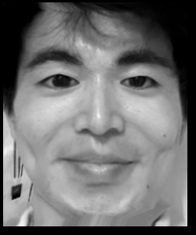 My Face Warped to Average Face Geometry |
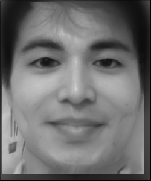 My Face Warped to Average Geometry Cross-dissolved with Average Face |
Here, we create a caricature of my facial features. This is done via linear "extrapolation." Suppose we have the lerp function which does (1 - t) * im1 + (t) * im2, if you choose a t > 1, then you will effectively be subtracting im1 from im2, while also adding more of im2 to the result. Here, I chose a t = 3. The image I subtracting from my own is the top left image from the above section -- the average face warped to my geometry.
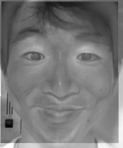
Caricature of My Face
Finally, we perform an interesting morph between my face and the average (Italy fashion) female model face. Here, I display how the morph towards mainly geometry and towards mainly appearance (pixel colors) look via the gifs. If you're interested, at the bottom, there's also images for my face colors, fully on the woman model geometry, and vice versa.
|
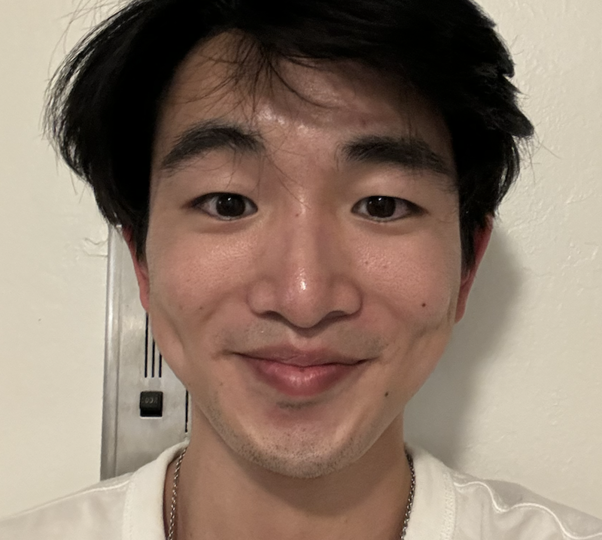 My Face |
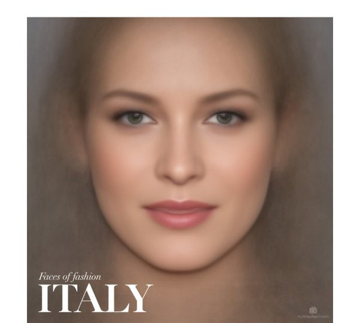 Average Woman Model |
 Morphing Appearance (towards 100% of the woman's appearance, with a slight shift towards the woman model's geometry) |
 Morphing Geometry (towards 100% of the woman's geometry, with a slight shift towards the woman model's pixel colors) |
 Full Morph Sequence |
|
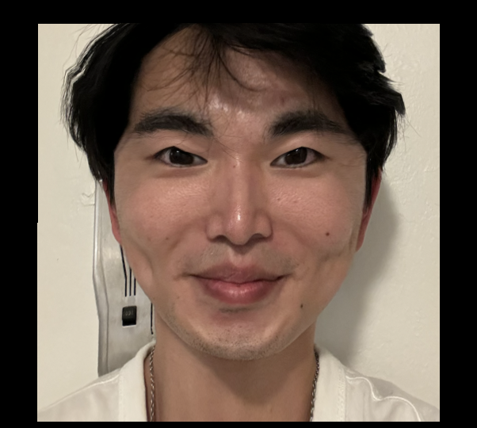 My Face colors, fully on the Woman Model Geometry |
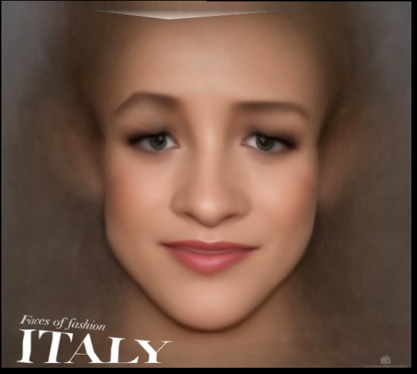 Woman Model's colors, fully on My Face Geometry |